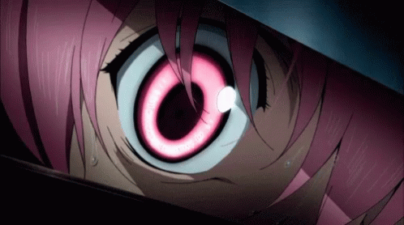
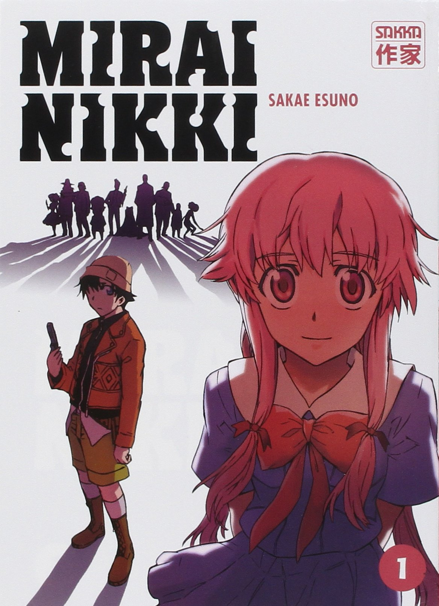
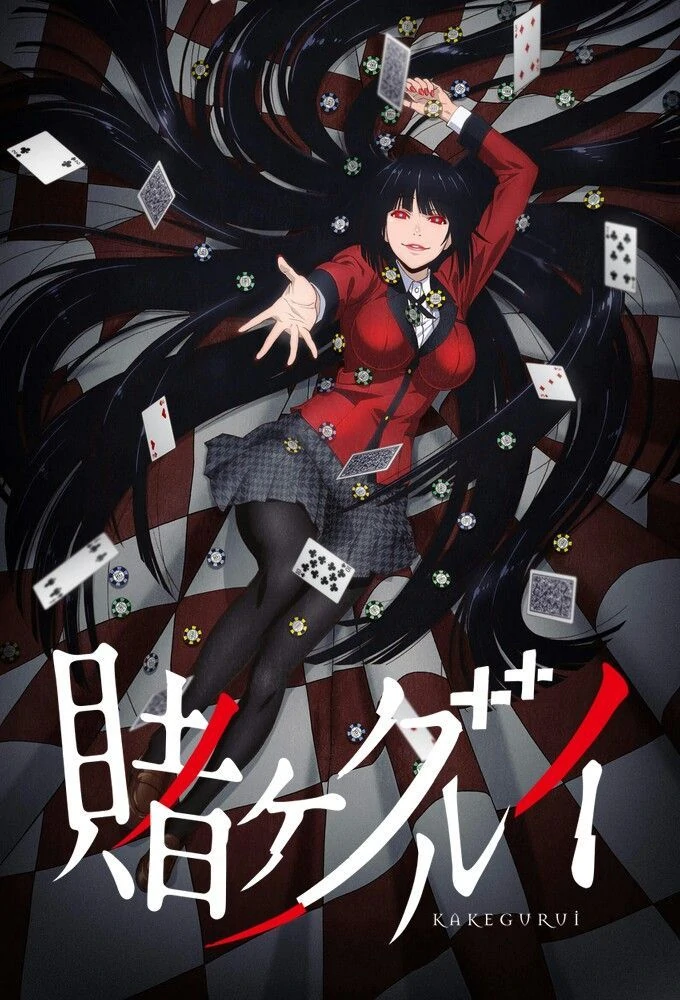
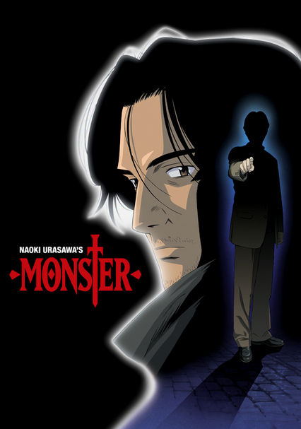

What Is An Psychological-Based Anime?
The psychological genre in anime plays around with your mind. It often makes you ask yourself many questions when watching the anime because of how the characters are acting. It also creates a sense of fear and uneasiness. This type of anime does not involve cheap jumpscares that you usually experience in movies, but it relies on a play in emotions, almost to where you cannot trust one of the characters. In most cases, the anime contains a good story that is difficult to accept. For instance, one character can be trustworthy but may end up backstabbing another character. You are left wondering why. The psychological genre does a good job at questioning your beliefs, and contains an interesting story or mysterious characters. Here are a few examples of psychological-based animes.
Death Note
 A shinigami, as a god of death, can kill any person under specific cirumstances such as seeing the victim's face and writing down their name in a notebook called a "Death Note". One day, Ryuk, who is a shinigami, drops a Death Note into the human realm. High school student Light Yagami stumbles upon the Death Note and writes down a criminal's name in it just to test if it actually works. When the criminal dies, Light is surprised and quickly recognizes how powerful he is with the Death Note. With this divine power, Light decides to extinguish all criminals in order to build a new world where crime does not exist. As a result, people view him as a god and Light is blinded by this image. Police, however, quickly discover that a serial killer is targeting criminals and, consequently, try to stop the culprit. The Japanese investigators eventually hire L, the best detective that has ever existed so that these deaths are put to a halt. IMDb rated the anime a 9/10 and it aired in 2006.
A shinigami, as a god of death, can kill any person under specific cirumstances such as seeing the victim's face and writing down their name in a notebook called a "Death Note". One day, Ryuk, who is a shinigami, drops a Death Note into the human realm. High school student Light Yagami stumbles upon the Death Note and writes down a criminal's name in it just to test if it actually works. When the criminal dies, Light is surprised and quickly recognizes how powerful he is with the Death Note. With this divine power, Light decides to extinguish all criminals in order to build a new world where crime does not exist. As a result, people view him as a god and Light is blinded by this image. Police, however, quickly discover that a serial killer is targeting criminals and, consequently, try to stop the culprit. The Japanese investigators eventually hire L, the best detective that has ever existed so that these deaths are put to a halt. IMDb rated the anime a 9/10 and it aired in 2006.
Mirai Nikki
Also known as "Future Diary", this anime deals with high school student Yukiteru Amano. Amano spends his days writing a diary on his cellphone, while talking to his two imaginary friends Deus Ex Machina, who is the god of time and space, and Murmur, the god's servant. Eventually, these two characters reveal themselves to be actual entities and Deus grants Amano a diary, which shows descriptive entries based on the future. This forces Amano into a battle royale with eleven other diary holders. Amano must be the last man standing but he teams up with his obsessive stalker Yuno Gasai which makes it difficult along the way. He cannot help himself but to think if Gasai will betray him. Gasai secretly loves Amano and is willing to do anything to save him. The ultimate question is: will she kill Amano to be the winner of the battle royale? If so, when? IMDb rated the anime a 7.6/10 and it aired in 2011.
Kakegurui
If you love to gamble, Kakegurui is for you. Get your gambling freak on! Kakegurui takes place in Hyakkaou Private Academy in which its students prepare for their time in the real world. Since many of the students are the children of the richest people in the world, the academy stands out more than the other schools. This academy is not your typical school that every student attends in the real world because it is basically a gambling den. Rather than teaching its students about history, math, or any other topic, it educates them in the art of dealing with money and manipulating people. Simply put, money is power and those who come out on top in the games stand at the top of the school. Yumeko Jabami, a skillful gambler and transfer student, challenges everyone in the school. Unlike the rest, she does not play to win, but for the thrill of the game. Will Jabami defeat her classmates? What new tricks does she have up her sleeve? IMDb rated the anime a 7.2/10 and it aired in 2017.
Monster
Dr. Kenzou Tenma, an elite neurosurgeon, is on his way to climbing the hospital ranks. However, an event changes Tenma's life forever. While preparing to perform surgery on someone, he gets a call from the hospital director telling him to switch patients and instead perform life-saving brain surgery on a famous performer. Being successful, his employees applaud him but what about the other patient? Tenma has a crisis of conscience because he let the other patient die. When faced with a similar situation, Tenma does not decide to switch patients. This causes him to lose his rank but eventually gains it back. Expectingly, Tenma faces a similar situation again which triggers his past trauma. This anime highlights how important it is for surgeons to act when they are operating on their patients. If they make the wrong decision, it can prove to be costly. IMDb rated the anime a 8.6/10 and it aired in 2004.